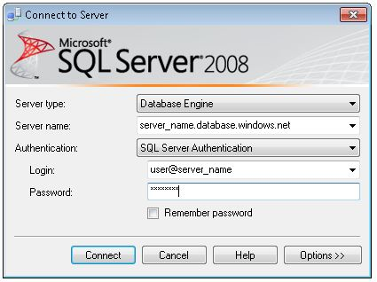

In this section I'll just basically write out the process of uploading to the cloud. This walkthrough should show that
I understand the process, as well as complete the necessary blog requirements.
First, start by creating an account on Azure.
Then, click resource group off to the left. Setup a new resource with the plus sign, name it what you like. I went with FallTerm. Don't forget to refresh!
Time to setup the database. Add a new db, blank, no elastic pool. Select create server, fill in necessary fields. Then make sure to use the basic pricing tier, then pin it to your dashboard!
Next up, create a new web application. Use the existing resource group, then fill in all necessary fields and pin to dashboard.
Do a quick check to see if it is live!
Now, click on your DB and find "set server firewall". Whatever your listed IP is, go ahead and add it so you can securely access the DB.
Next up, open Visual Studio and login to Azure.
Open Sql Server Management Studio and login properly here as well. Example below.

Now, go ahead and run your Up and populate script on the database.
Add a local connection string to the Online Database. For now, set it here and hide it later. Remember, no brackets around the username and password information!
Add the dbcontext name as well as the connection string to your Azure/Appsettings/connectionStrings area.
Rebuild!
Now its time to publish! Select existing, azure services, publish!
Test your web app!
Conclusion
I think Azure can be a great place for hosting websites with databases. Pretty simple to setup once everything works.
Once you get the process down, should be a very quick way to deploy websites!